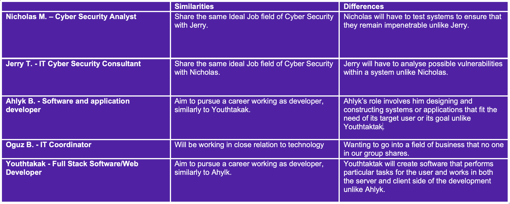

Ideal Jobs and Group Comparison

Nicholas - Cyber Security Analyst
A Cyber Security Analyst’s role is to plan and carry out technology-based security to protect an organisation s computer network, data and information. Additionally, a cyber security analyst monitors potential threats and breaches within data and security.
Jerry T. - IT Cyber Security Consultant
An Information security consultant is someone who deals with safeguarding public/private entities digital assets. He/She assesses various systems such as software, computer systems, and network vulnerabilities, then designs and implements the best security solution that the entity needs.
Ahlyk B. - Software and application developer
A Software and application developer designs or constructs systems or applications to be run by various platforms such as mobile or computers. The aim of this job is to make sure that the created software or application fits the need of its target user or its goal. Furthermore, developers ensure that the application or software created is efficient in running tasks needed by a user.
Oguz B. - IT Coordinator
lT coordinators maintain information technology systems and networks. They perform both technical and administrative tasks to ensure functionality and efficiency of computer and telecom systems. An IT coordinator must be knowledgeable in software, hardware and networks. They must be critical thinkers and problem-solvers with great attention to detail. excellent communication and people skills are required.provides other IT advice and assistance. The coordinator should also be able to have good communication skills and customer service.
Youthtakak - Full Stack Software/Web Developer
Full stack software developer creates software that performs a particular task for the user and works in both the server and client side of the development. Responsibilities of a software developer include developing and testing software for clients, updating and monitoring existing applications, and documenting software development processes. Throughout the development process, they have to work with different stakeholders to create a software best fit to the requirements needed by the end user.
Comparsion
Both Nicholas and Jerry are interested in working in the Cyber Security field, however, Jerry has narrowed in a particular profession within this field, aiming to pursue being an IT Cyber Security Consultant whereas Nick aims to work as a Cyber Security Analyst. The main prospects of working within cybersecurity involve safeguarding an organization's files and network, installing firewalls, creating security plans, and monitoring activity (Compare Cyber Security Careers Job Duties, Cyber Security Education, 2020). As an Analyst, Nicholas will have to test a system to ensure that it is impenetrable, whereas Jerry will have to analyse possible vulnerabilities within a system (Difference Between a Security Analyst and a Security Engineer? - SSI, 2020).
Ahlyk and Youthtakak both aim to pursue working as developers. In particular, Youthtakak aims to become a Full Stack Software/ Web Developer whereas Ahlyk strives to be a Software and application developer. Ahlyk’s role as a Software and Application developer involves him designing and constructing systems or applications that fit the need of its target user or its goal. Whereas, Youthtakak’s position will need him to “create software that performs particular tasks for the user and works in both the server and client side of the development” (Software Developer job description and duties | Robert Half, 2020). Although both Ahlyk and Youthtakak want to work as programmers they will have very different roles Ahlyk will work on the programs that they are aiming to create, whereas Youthtakak works in relation with websites and web applications that run on internet browsers (Web Developer vs. Software Developer | UAB Online Degrees, 2020).
Unlike the other group members, Oguz is interested in becoming an IT Coordinator. As an It Coordinator, Oguz will need to manage different aspects of technology for classrooms, businesses, schools, and universities. Moreover, while working in this position an individual must possess excellent customer service and communication skills to work effectively.
All careers that the group members aspire to work in share common traits such as working with technology, being a collaborative member of a team, and using expert IT knowledge and skills developed through university studies. However these careers have many differences, whilst Nick and Jerry aim to work in cybersecurity to help safeguard information and data using technical and logical skills, Ahlyk and Youthakak aim to work as developers which involve retrieving, storing, and manipulating data. Their skills and knowledge differ from Nick and Jerry as they need to have organizational and team-working skills. Oguz aspires to work as an IT coordinator which shares similarities with the other group members' ideal career, as it similarly involves the need for programming and problem-solving skills.
